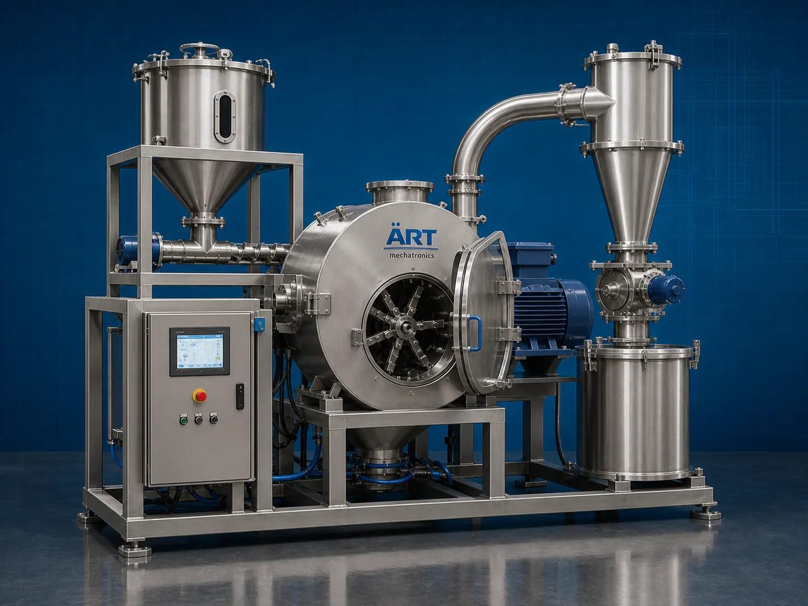

Grinder Machine (Industrial Grinding & Size Reduction System)
A Grinder Machine, also known as an Industrial Grinding Machine, Pulverizer Machine, Material Grinding System, or Industrial Size Reduction Machine, is an advanced industrial processing solution designed for grinding, pulverizing, crushing, powder making, micronizing, particle size reduction, and…

About the Grinder Machine
Grinder systems are widely used for: ✔ Spice grinding operations ✔ Grain pulverizing ✔ Herb powder processing ✔ Chemical grinding applications ✔ Food ingredient powder making ✔ Biomass grinding operations ✔ Pharmaceutical powder processing ✔ Industrial material size reduction
The machine improves: ✔ Powder fineness consistency ✔ Production efficiency ✔ Material processing speed ✔ Product quality ✔ Automation productivity ✔ Industrial hygiene ✔ Energy-efficient processing
Industrial grinder machines use: ✔ Heavy-duty grinding chambers ✔ High-speed grinding blades and hammers ✔ Rotor and classifier systems ✔ PLC and HMI automation controls ✔ Precision screening mechanisms
to automatically grind and process materials into uniform powder or fine particles with superior consistency and high production efficiency.
Industrial grinder machines are widely used in industries such as:
Spice processing industries Food processing industries Pharmaceutical industries Chemical industries Agro industries Biomass industries Nutraceutical industries Industrial manufacturing industries
where fine grinding, uniform particle sizing, and continuous industrial processing are essential.
The machine is highly suitable for: ✔ Spice powder production ✔ Grain grinding operations ✔ Herb and botanical processing ✔ Food ingredient pulverizing ✔ Chemical powder processing ✔ Industrial material size reduction systems
ART Mechatronics offers high-performance grinder machines, engineered for continuous industrial operation, precision grinding performance, hygienic processing, and reliable long-term industrial productivity.
Working Principle of Grinder Machine
- 1. Material Feeding & Loading Raw materials are automatically or manually fed into grinding chamber for processing operation.
- 2. Grinding & Pulverizing Process Machine automatically crushes, grinds, pulverizes, and micronizes materials using high-speed rotating blades, hammers, or grinding systems.
Precision grinding systems ensure uniform particle size reduction and smooth material processing.
- 3. Grinding & Powder Processing Operation Machine handles processing of: ✔ Spices ✔ Grains ✔ Herbs ✔ Food ingredients ✔ Chemical products ✔ Biomass materials ✔ Pharmaceutical materials ✔ Industrial minerals
accurately and continuously.
- 4. Particle Size Reduction & Classification Process Machine performs: Grinding Pulverizing Crushing Micronizing Powder formation Particle classification
for efficient industrial material processing operations.
- 5. Intelligent Automation & Hygiene Integration Optional systems include: Dust collection systems Automatic feeding systems Cooling systems Noise reduction systems Food-grade stainless steel construction
- 6. Finished Powder Discharge Processed powder discharged automatically for: Packaging operations Mixing systems Storage silos Further processing Export shipment handling
Types of Grinder Machines
- 1. Spice Grinder Machine Designed for: ✔ Spice powder processing applications
- 2. Hammer Mill Grinder Machine Suitable for: ✔ Heavy-duty industrial grinding operations
- 3. Pulverizer Machine Uses: ✔ Fine powder making and industrial pulverizing systems
- 4. Food Grinding Machine Designed for: ✔ Food ingredient and agro product processing systems
- 5. Micronizer Grinding Machine Suitable for: ✔ Ultra-fine powder processing operations
- 6. Fully Automatic Industrial Grinding System Designed for: ✔ Complete industrial processing automation lines
Industries Using Grinder Machines
🌶️ Spice Processing Industry Turmeric, chilli, coriander, cumin, and spice powder production systems. 🍅 Food Processing Industry Food ingredients, grains, herbs, and industrial grinding systems. 💊 Pharmaceutical Industry Medicine powders, nutraceutical products, and herbal processing systems. ⚗️ Chemical Industry Industrial powders, pigments, and chemical grinding operations. 🌾 Agro & Biomass Industry Biomass materials, seeds, feed products, and agro processing systems. 🛒 FMCG Industry Consumer product ingredients and industrial powder processing systems.
Features & Advantages
✔ High-speed automatic grinding operation ✔ Accurate and uniform powder processing systems ✔ Heavy-duty industrial grinding technology ✔ PLC and automation control systems ✔ Improves production efficiency and powder consistency ✔ Reduces manual processing dependency ✔ Supports multiple industrial materials and applications ✔ Reliable long-term industrial performance ✔ Smooth integration with industrial production lines
Technical Highlights
Machine Type: Grinder machine Industrial grinding system Pulverizer machine Material Compatibility: Spices Grains Herbs Food ingredients Chemical powders Biomass materials Industrial minerals Integration: Grinding blade systems Hammer mill systems Automatic feeding systems Dust collection systems Features: PLC control system Touchscreen HMI Heavy-duty steel construction Cooling systems Particle classification systems Applications: Grinding Pulverizing Powder making Industrial crushing Micronizing Material size reduction Automation: Semi-automatic Fully automatic industrial systems
Turnkey Grinding Solutions
ART Mechatronics offers: Complete industrial grinding systems Automatic powder processing solutions Industrial material handling automation systems Dust collection integration systems Installation & commissioning After-sales service & AMC
Why Choose Art Mechatronics
Expertise in industrial processing and automation systems Customized grinding solutions for multiple industries High-performance and precision grinding technology Advanced PLC and automation systems Proven industrial processing performance across sectors
Applications
Spice Processing Plants Food Manufacturing Facilities Pharmaceutical Processing Units Chemical Processing Industries Agro Product Processing Plants Industrial Manufacturing Industries
Related Process Equipment machines
Get pricing & specs for the Grinder Machine
Share the product, target capacity, current process and plant location. These details help our engineers discuss the right machine or line configuration.
One partner, from design to start-up
ART Mechatronics designs, manufactures, installs and commissions your Grinder Machine solution with regional presence in India, UAE and Thailand.